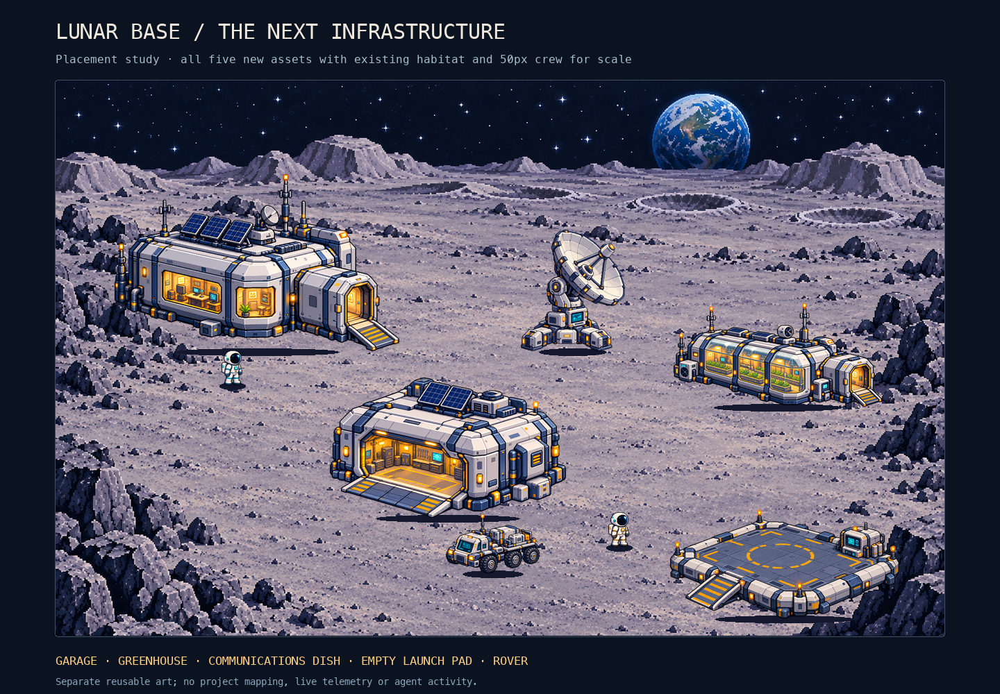
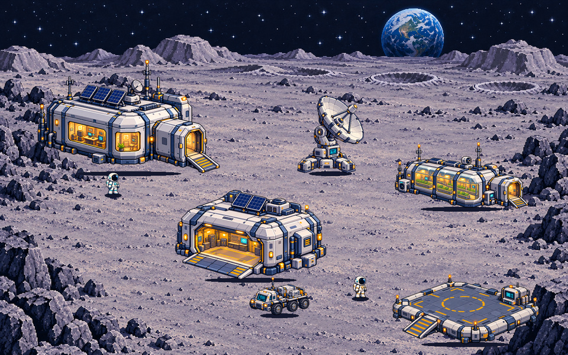
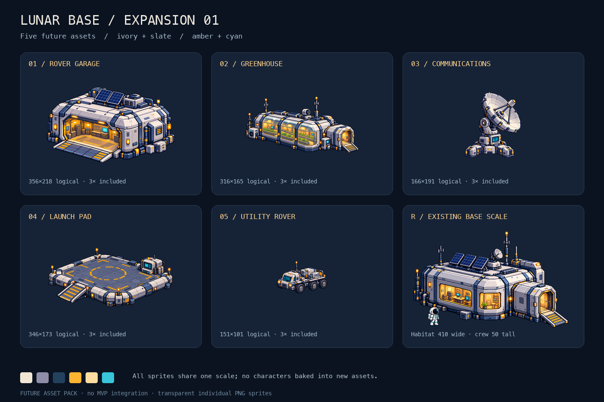

EXPANSION ARTWORK / 01
A little more room on the Moon.
Rover garage, greenhouse, communications dish, empty launch pad and utility rover. Reusable art shown in isolation here; the live shared base uses four of these sprites with your agents. The launch pad remains available in this art pack.


All five, at the existing base scale

A gentle motion study
A grounded rover shuttle with rolling wheels, plus quiet cyan greenhouse and communications-display activity. An illustrative loop with no real work or telemetry.

Individual sprites
